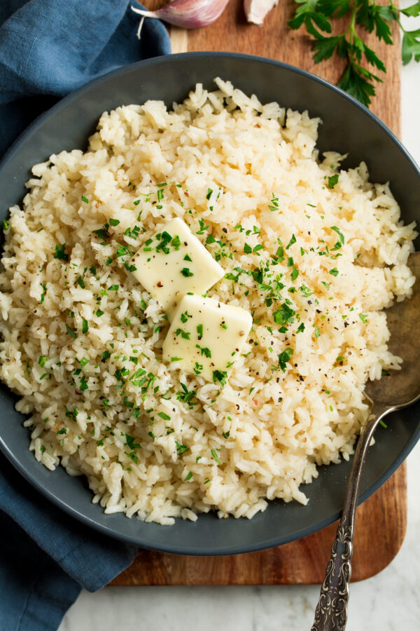

Garlic Butter Rice

The Perfect Side-Dish to Any Meal!
One of the perfect go-to side dishes! Because it pairs well with just about anything, and only needs a handful of ingredients you can always keep on hand. It's the perfect side dish for any of our other recipes on this huge site!
1 1/2 cups dry long grain white rice, rinsed in a fine sieve and drained well
1/4 cup finely chopped yellow onion
1 1/2 Tbsp minced garlic (or up to 2 Tbsp)
2 1/2 cups low-sodium chicken broth
Salt and freshly ground black pepper
4 Tbsp unsalted butter, cut into 1 Tbsp pieces, divided
1 Tbsp minced fresh parsley (optional)
- Melt butter in pan: Melt 1 Tbsp butter in a large saucepan over medium heat.
- Saute onion: Add yellow onion and saute until starting to deepen in color, about 3 minutes.
- Saute garlic: Add garlic and saute until just barely starting to deepen in color (not browned), about 1 minute.
- Add broth, boil: Pour in chicken broth, season with salt and pepper to taste and bring to a boil.
- Add rice, simmer: Add rice and stir once, cover with a snug lid then reduce heat to low. Let simmer until liquid has been absorbed, about 15 - 18 minutes.
- Rest add more butter, fluff rice: Remove from heat and let rest 5 - 10 minutes. Add remaining 3 Tbsp butter, toss and fluff with a fork.
- Garnish: Serve warm garnished with parsley if desired.
Return here